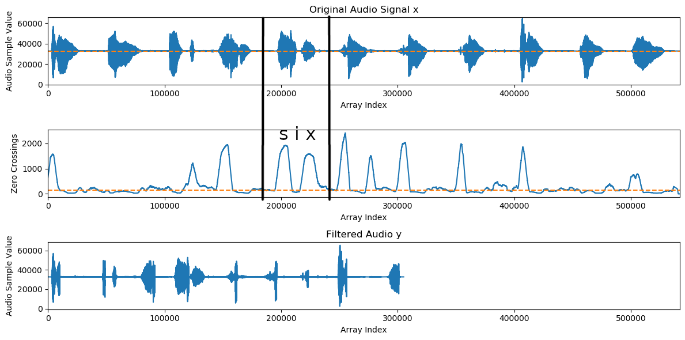

HW4: Consonant/Vowel Filtering in Audio (25 Pts)
Chris Tralie
Due Monday 11/9/2020
Overview
The purpose of this assignment is to give students more practice with pointers, arrays, loops, and methods in C++ by implementing a "filtering" method, in which parts of an audio clip are removed based on different criteria. Students will be using the audio code from class as a starting point. This assignment is very similar to a lab that was given last spring in CS 173, except the code for computing crossings is not given to you, and you will be implementing a more efficient version than the one provided in that lab.
Learning Objectives
- Pass arrays by reference between methods via pointers
- Access array elements in C++
- Dynamically allocate and de-allocate arrays in C++
- Return values by reference from methods in C++
- Use command line arguments in C++
Background: Audio Filtering
Sound is the result of pressure waves traveling through the air. Just as our ears pick up these pressure variations and send a signal to our brain, digital microphones/ADCs are designed to turn these variations into an array of pressure samples over time (in the discussion below, we often refer to "sample" and "array index" interchangeably). Digital audio is often sampled at 44100 samples per second, which we refer to as the sample rate (FS). This means that if we want to represent 2 seconds of audio, for instance, we need an array with 88200 samples (good thing we're using arrays and don't have to define 88200 individual variables!). The reason for this is that we need a sampling frequency that's at least twice the highest frequency we want to represent. Since the highest frequency humans can hear is around 20,000hz, 44100hz is adequate. (Another fun fact about this number is it is 22 32 52 72)
In the audio code from class, each audio sample is a number between 0 and 65536, represented as a float. You will need to create a new array that's a filtered version of the original audio array, which only retains samples which belong to vowels or which only retains samples which belong to consonants. You can use the filter function from module 7 as a guide to how to copy over samples that survive, but the condition for keeping an element is different (though still surprisingly simple!). In particular, consonants are "higher frequency" regions of audio, which means that the audio samples in these regions "wiggle around" more. Therefore, if you look in a window around an audio sample and count the number of times it "crosses" the midpoint 32768 (that is, goes from a value above 32768 to a value below 32768, or vice versa, in adjacent samples), this is a rough proxy for how much of a consonant it is.
For instance, consider the following audio clip
If we create a new array in which the number of crossings in a window of size 4001 around each sample (2000 on each side) must be at least 100, we get the following audio
Below is a plot that shows how this happens. The original audio is up top, and the filtered audio is at the bottom. The middle plot shows the crossings counted in windows of size 4001 around each sample, and a threshold of 100 is drawn as a dotted line. As an example, consider the circled region around the letter "six." The 32768 crossings peak around s and x, but they dip around i.

It is possible to extract the vowel sounds by doing the exact opposite; that is, only keep samples whose crossings in a window around them are below a certain amount. For example, if we create a new array in which the zero crossings in a window of size 4001 around each sample must be at most 100 to keep that sample, we get the following audio
In this assignment, you will implement a program that can do either option for an input array.
Background: Summed Array Lookups
One way to look at the sum of a particular value in a window around a sample is to simply loop through all of the elements in that window. However, since this has to be done for every sample, this can be very slow for long windows. There is a faster way to do this with some preprocessing using a summed array. To see how this works, it's helpful to look at an example. Let's imagine that we have an array c that's 1 if a crossing occurred or 0 otherwise
int c[] = {0, 0, 0, 1, 1, 1, 1, 0, 0, 0, 0, 0, 1, 1, 0, 0, 1, 0, 1, 1};
If we want to figure out how many crossings there are between index 3 and index 10, we we can loop through and see that it's 1+1+1+1+0+0+0+0 = 4. But here's another way we can do this. Let's create a cumulative sum array called s, in which the value at index i is the sum of the values at all indices less than or equal to i. For the above example, that would look like this:
int s[] = {0, 0, 0, 1, 2, 3, 4, 4, 4, 4, 4, 4, 5, 6, 6, 6, 7, 7, 8, 9};
Now, it is possible to figure out how many crossings there are between an index i and an index j simply by looking at s[i] - s[j-1]. So looking between indices 3 and 10, as in the above example, we'd just compute s[10] - s[2] = 4 - 0 = 4. As another example, the number of crossings between indices 4 and 16 is s[16] - s[3] = 7 - 1 = 6 This is a constant-time operation, regardless of how long the interval in question is, since it's simply the difference of two numbers. So once we pay the up-front cost of computing the cumulative sum array, it is very fast to compute the number of zero crossings over many intervals.
Programming Task
Your job in this assignment will be to take the audio code from class and to implement the ability to filter out either the consonants or the vowels from audio by the above procedure. You should have 5 command line arguments:
- A path to the input audio file, relative to where your program is being run
- A path to the output file where the audio is being saved
- The length of the window on either side of each sample in which to count the crossings
- The threshold for inclusion of a sample
- Whether this is a consonant (keeping samples with counts above a threshold) or a vowel (keeping samples with counts below the threshold) filtering. If this parameter is 1, assume constants. If it is 0, assume vowels.
For instance, assuming the code has been compiled to a program called filter, the command below would apply a consonant filter to the file femalecountdown.wav with a window size of 2000 on either end of each sample, with a threshold of 100 crossings, and it would save it to a file "consonants.wav"
Similarly, the following command would extract the vowels with the same parameters
Remember that you can use the method atoi() in the standard input library to convert a char* string to an int. Remember also to de-allocate all arrays you've dynamically allocated as soon as you're finished using them to avoid memory leaks!. Points will be deducted for memory leaks.